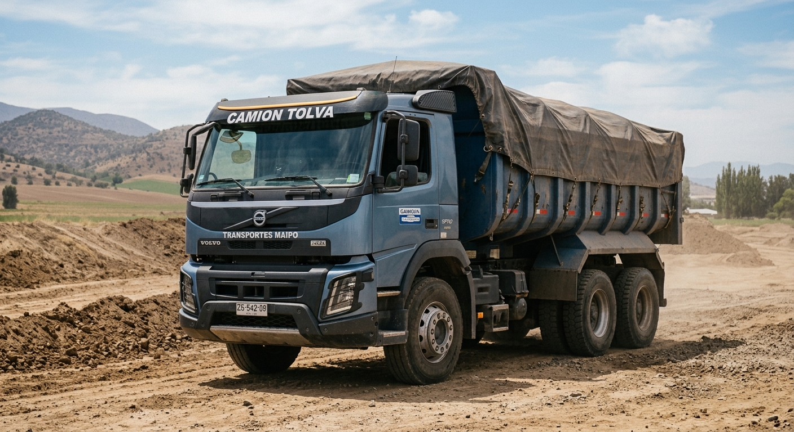

Camión Tolva
Diseñados para transportar y descargar volúmenes de materiales a granel de manera rápida y eficiente. Cuentan con una tolva basculante que permite levantar la carga y descargarla en el lugar requerido. Dentro del compostaje, este servicio pone foco en el tapado de la tolva, evitando que los olores existan en sus traslados.